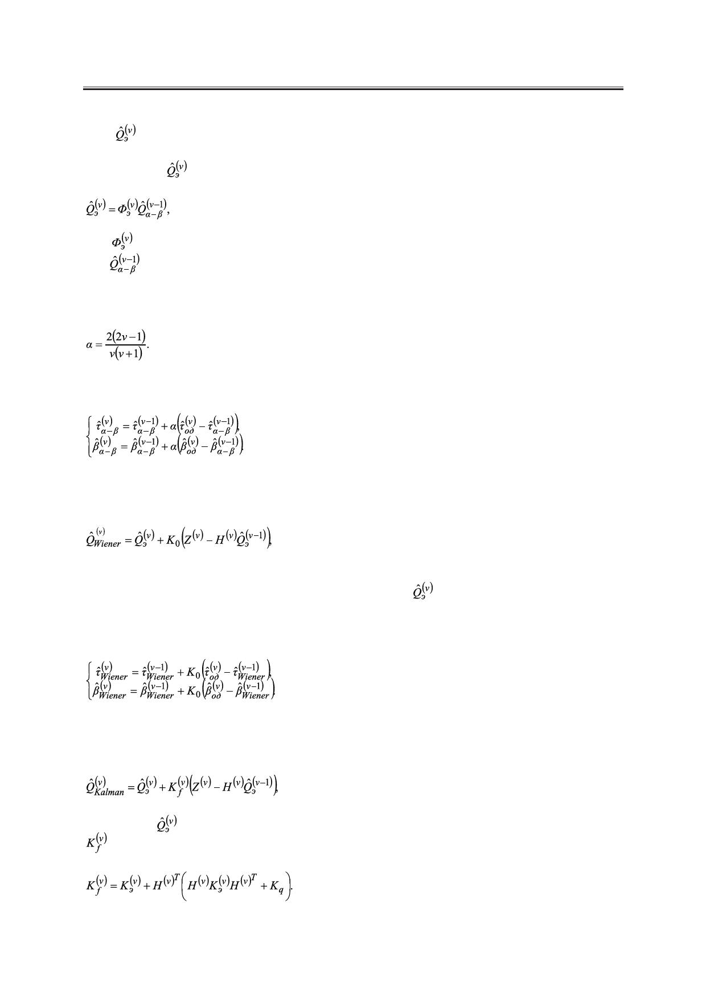

Б.А. Заикин
– экстраполяционные (прогнозируемые) оцененные значения параметров на
предыдущем шаге.
Матрица может быть вычислена, как:
(9)
где – экстраполируемая матрица перехода;
– значение оцененного параметра на предыдущем шаге.
В ряде работ было показано, что хорошие показатели оценивания можно получить,
если выбирать параметр α в зависимости от номера такта оценивания [5]:
(10)
Уравнения (8) в случае рассматриваемых системы и объекта примут следующий вид:
(11)
Фильтр Винера. Основное уравнение оценивания с использованием фильтра Вине-
ра имеет вид:
(12)
где K0 – вектор постоянных коэффициентов усиления.
Этот вектор можно вычислить заранее. Матрица
вычисляется согласно (9), пу-
тем подстановки фильтруемых значений из (12). В рассматриваемом нами случае выра-
жения фильтрации (12) представим в виде:
(13)
Фильтр Калмана. Основное уравнение оценивания с использованием фильтра Кал-
мана представляется в виде:
(14)
где матрица вычисляется согласно (9), путем подстановки фильтруемых значений из (14);
– матрица коэффициентов усиления фильтра, равная
(15)
Российский технологический журнал 2017 Том 5 № 5
17